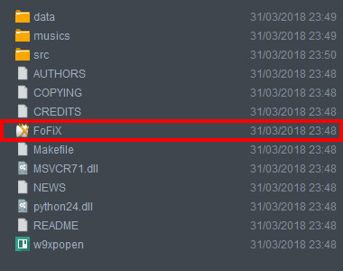
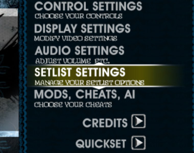

Download
Selecione a plataforma para a qual deseja efetuar o download
Linux
Download
Acts 26:18 BETA v1.0
Download direto - 176mb
ATENÇÃO!
A versão linux impossibilita o download do jogo já com o mod configurado, por esse motivo, recomendamos a instalação do WineHQ! Ele consegue executar aplicativos ".exe" no linux sem dificuldades, nós testamos com o Acts e APROVAMOS!
Para instalar, abra o terminal (Ctrl+Alt+T) e cole os seguintes comandos (um de cada vez):
sudo dpkg --add-architecture i386
wget -nc https://dl.winehq.org/wine-builds/Release.key
sudo apt-key add Release.key
sudo apt-add-repository https://dl.winehq.org/wine-builds/ubuntu/
sudo apt-add-repository 'deb https://dl.winehq.org/wine-builds/ubuntu/ trusty main'
sudo apt-add-repository 'deb https://dl.winehq.org/wine-builds/ubuntu/ xenial main'
sudo apt-get update
sudo apt-get install --install-recommends winehq-stable
Após isso é só seguir os passos abaixo, na hora de abrir o jogo é só selecionar o Wine e jogar!
MacOS
Ops... Parece que essa versão ainda não está disponível...
Na Página Oficial do jogo FoFix é oferecido o download do jogo para MacOS, porém, Acts ainda não foi testado nessa plataforma.
Tem um Mac? Quer nos ajudar? Entre em contato para testarmos o mod, caso funcione ficaremos felizes de disponibilizarmos a versão para Mac aqui no site!
Como "Instalar" o jogo
Após efetuar o download, escolha um lugar para deixar a pasta do jogo, ele é um aplicativo PORTÁVEL, ou seja, não é necessário realizar a instalação! Porém, uma configuração é necessária:
Depois de escolher um local para a pasta do jogo, abra a pasta e clique duas vezes no aplicativo "FoFix" para abrir o jogo (criar um atalho para ele pode facilitar)

Com o jogo aberto, abra o menu "OPTIONS", em seguida, acesse "Setlist Settings", como mostra a imagem.
A primeira opção é "Alterar Caminho do Setlist", abra, selecione "musics [Diretorio]" e "[Aceitar Diretorio]".
Feito isso é só voltar a tela inicial e jogar!

Para que isso serve?
Como Acts 26:18 é na realidade o MOD* de um jogo, instalar o jogo original e aplicar a modificação é um processo complicado, por esse motivo, criamos o portátil, a única desvantagem é que o local das músicas não fica salvo.
Mas fique tranquilo! Uma vez configurado, nunca mais será necessário configurar em seu pc novamente!